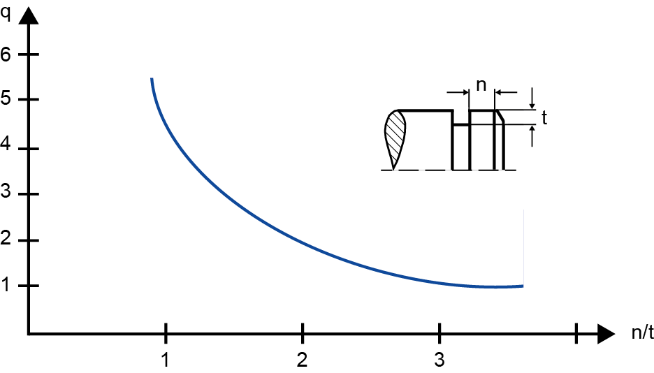

|
|
|


自动计算载荷因子 q
点击 q 旁边的加号按钮，将显示一个窗口，在其中可以根据轴肩长度 n 与沟槽深度 t 的比值计算 q。沟槽深度定义为：
- t = (d1 - d2)/2 用于轴环
- t = (d2 - d1)/2 用于孔环

图43.3：(a) 载荷因子 q、轴肩长度 n 和沟槽深度 t 的定义。
English Original
Automatic calculation of load factor q
Click on the Plus button next to q to display a window in which you can calculate q, based on the ratio of the shoulder length n to the groove depth t. The groove depth is defined as:
- t = (d1 - d2)/2 for shaft rings
- t = (d2 - d1)/2 for bore rings
Figure 43.3: (a) Definition of load factor q, shoulder length n and groove depth t.